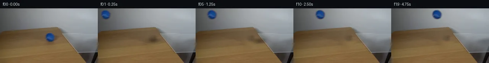
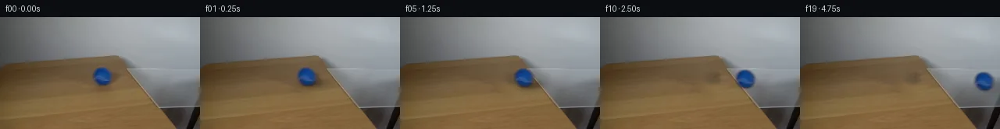
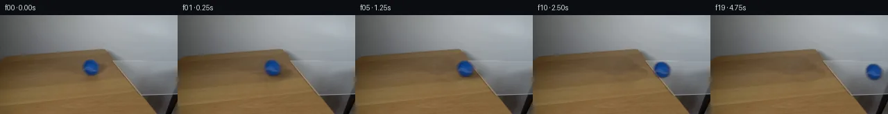
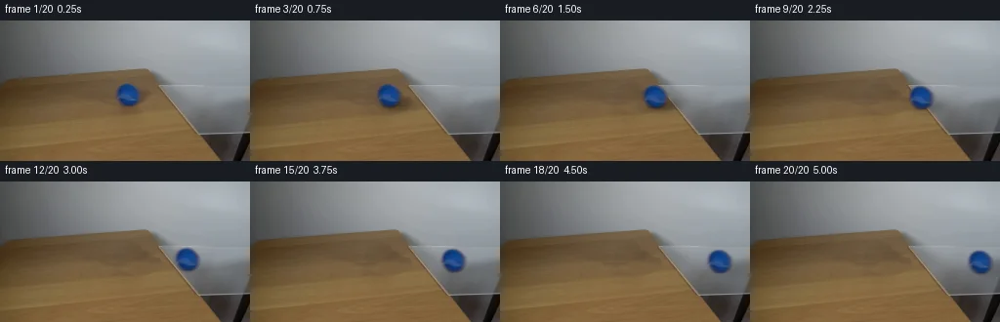
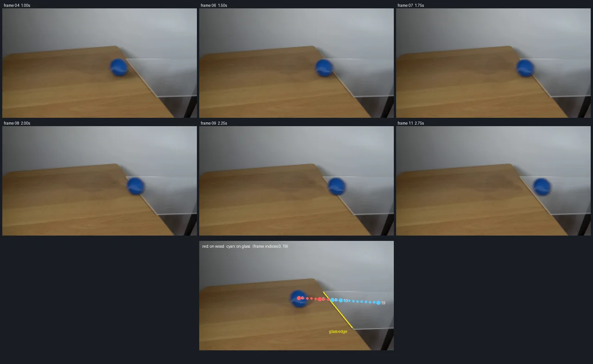

V0 · 初版
2026-11-05T10:54:13.412109+00:00 · RGB a84f8a9a37a2
![]()
Observable Generation Trace
把最终像素视频、Harness 冻结的每轮候选、真实工具事件和 Agent 自述放在同一页。可观测证据与模型自述分开标记，避免把“模型说它检查过”误当成真实工具调用。
![首帧]()
Static locked-off single-shot with fixed frame throughout filmed with constant framerate in real-time. The scene shows a realistic scientific demonstration. The scene only contains the described setup and actions. A piece of clear glass resting on the edge of a light-colored wooden table against a plain white wall. The blue tennis ball rolls from the wooden table over the glass.
首帧显示在左侧播放器初始画面。Track 权限、隔离和 tensor 一致性来自 run manifest，而不是 METHOD.md。
默认勾选初版和最终版；可选其他版本一起同步播放。仅检查图更新的连续重复快照已合并，回退旧视频仍保留为一次修订。
Observable events
来源：events.jsonl + run manifest
events.jsonl 可验证该 Agent 成功读取了 18 张 PNG；上面的 round 图不等同于读取次数，而是 Harness 独立冻结的候选。
Frozen candidates
每张图来自该 round 的真实 00 / 01 / 05 / 10 / 19 帧

pixels 1fb677f8f3103f15 · code 23e5ef967f204bed
--- previous/generate.py
+++ current/generate.py
@@ -0,0 +1,94 @@
+"""PixelWorld case_0025 generator.
+
+Blue ball rolls right off the wooden tabletop over a clear glass sheet.
+Pure local pixel operations: static-background inpaint, alpha-sprite
+extraction from frame 0, analytic soft shadows, alpha compositing.
+"""
+from pathlib import Path
+import numpy as np
+import cv2
+from PIL import Image, ImageDraw
+import artifact_io
+
+CASE = Path(__file__).parent
+TMP = CASE / '.tmp'
+TMP.mkdir(exist_ok=True)
+
+C0 = np.array([131.0, 75.0]) # ball center in frame 0
+SPEED = 5.5 # px / frame (0.25 s)
+SEAM = lambda y: 163.0 + 0.81 * (y - 67.0) # glass left edge x(y)
+
+# ---------------------------------------------------------------- background
+orig = np.array(Image.open(CASE / 'first_frame.png').convert('RGB'))
+H, W, _ = orig.shape
+
+ball_mask = np.zeros((H, W), np.uint8)
+cv2.circle(ball_mask, (131, 75), 14, 255, -1)
+shadow_region = np.zeros((H, W), np.uint8)
+cv2.ellipse(shadow_region, (138, 87), (18, 8), 0, 0, 360, 255, -1)
+cv2.ellipse(shadow_region, (152, 85), (14, 6), 0, 0, 360, 255, -1)
+remove = cv2.dilate((ball_mask | shadow_region), np.ones((3, 3), np.uint8))
+clean_bg = cv2.inpaint(orig, remove, 7, cv2.INPAINT_TELEA)
+Image.fromarray(clean_bg).save(TMP / 'clean_bg.png')
+
+# ------------------------------------------------------- ball sprite (RGBA)
+x0, y0, win = 116, 60, 31
+C = orig[y0:y0 + win, x0:x0 + win].astype(np.float32)
+B = clean_bg[y0:y0 + win, x0:x0 + win].astype(np.float32)
+m = C[..., 2] - C[..., 0] # blue-minus-red chroma
+mb = B[..., 2] - B[..., 0]
+alpha = np.clip((m - mb) / 100.0, 0.0, 1.0)
+# hard core: strongly blue pixels fully opaque, keep soft fringe elsewhere
+yy, xx = np.mgrid[0:win, 0:win]
+rad = np.hypot(xx - 15, yy - 15)
+alpha[rad <= 10.6] = 1.0
+alpha[rad > 13.5] = 0.0
+alpha = cv2.GaussianBlur(alpha, (3, 3), 0.7)
+a3 = alpha[..., None]
+F = np.clip(np.where(a3 > 0.04, (C - (1 - a3) * B) / np.maximum(a3, 0.04), 0), 0, 255)
+sprite_pm = (F * a3).astype(np.float32) # premultiplied color
+sprite_a = alpha.astype(np.float32)
+Image.fromarray((alpha * 255).astype(np.uint8)).save(TMP / 'sprite_alpha.png')
+
+# ------------------------------------------------------------------ shadows
+def shadow_frame(cx, cy):
+ """Multiplicative shading map: contact occlusion + cast to the right."""
+ gx, gy = np.meshgrid(np.arange(W, dtype=np.float32),
+ np.arange(H, dtype=np.float32))
+ # wood coverage fraction under the ball: 1 on wood, 0 on glass
+ w = np.clip((cx - 159.0) / 27.0, 0.0, 1.0)
+ contact = np.exp(-0.5 * (((gx - (cx + 6)) / 12.0) ** 2 +
+ ((gy - (cy + 11)) / 5.0) ** 2))
+ cast = np.exp(-0.5 * (((gx - (cx + 14)) / 11.0) ** 2 +
+ ((gy - (cy + 8)) / 4.5) ** 2))
+ strength = (0.30 * contact + 0.10 * cast) * (1.0 - 0.72 * w)
+ return 1.0 - strength
+
+def place_sprite(frame, cx, cy):
+ tx, ty = cx - C0[0], cy - C0[1]
+ M = np.array([[1, 0, tx], [0, 1, ty]], dtype=np.float32)
+ d, a = 0, 0
+ pm = cv2.warpAffine(sprite_pm, M, (W, H), flags=cv2.INTER_LINEAR,
+ borderMode=cv2.BORDER_CONSTANT)
+ al = cv2.warpAffine(sprite_a, M, (W, H), flags=cv2.INTER_LINEAR,
+ borderMode=cv2.BORDER_CONSTANT)
+ msk = al > 0.01
+ rgb = np.zeros_like(pm)
+ rgb[msk] = pm[msk] / al[msk, None]
+ out = frame.astype(np.float32)
+ out[msk] = al[msk, None] * rgb[msk] + (1 - al[msk, None]) * out[msk]
+ return np.clip(out, 0, 255).astype(np.uint8)
+
+# ------------------------------------------------------------------ render
+frames = [orig]
+for t in range(1, 20):
+ cx = C0[0] + SPEED * t
+ cy = C0[1]
+ f = clean_bg.astype(np.float32) * shadow_frame(cx, cy)[..., None]
… diff truncated; 7 more lines …
pixels d332c748c4022b41 · code 6f9f84ef162b714f
--- previous/generate.py
+++ current/generate.py
@@ -56,7 +56,8 @@
gx, gy = np.meshgrid(np.arange(W, dtype=np.float32),
np.arange(H, dtype=np.float32))
# wood coverage fraction under the ball: 1 on wood, 0 on glass
- w = np.clip((cx - 159.0) / 27.0, 0.0, 1.0)
+ d = cx - SEAM(cy)
+ w = np.clip((d + 7.0) / 18.0, 0.0, 1.0)
contact = np.exp(-0.5 * (((gx - (cx + 6)) / 12.0) ** 2 +
((gy - (cy + 11)) / 5.0) ** 2))
cast = np.exp(-0.5 * (((gx - (cx + 14)) / 11.0) ** 2 +
@@ -65,8 +66,8 @@
return 1.0 - strength
def place_sprite(frame, cx, cy):
- tx, ty = cx - C0[0], cy - C0[1]
- M = np.array([[1, 0, tx], [0, 1, ty]], dtype=np.float32)
+ # source sprite center (15,15) maps to (cx, cy)
+ M = np.array([[1, 0, cx - 15], [0, 1, cy - 15]], dtype=np.float32)
d, a = 0, 0
pm = cv2.warpAffine(sprite_pm, M, (W, H), flags=cv2.INTER_LINEAR,
borderMode=cv2.BORDER_CONSTANT)
@@ -83,7 +84,8 @@
frames = [orig]
for t in range(1, 20):
cx = C0[0] + SPEED * t
- cy = C0[1]
+ # gentle downward image slope: path stays fully inside the glass pane
+ cy = C0[1] + 0.06 * (cx - C0[0])
f = clean_bg.astype(np.float32) * shadow_frame(cx, cy)[..., None]
f = place_sprite(np.clip(f, 0, 255).astype(np.uint8), cx, cy)
frames.append(f)pixels d332c748c4022b41 · code 6f9f84ef162b714f
No generate.py text change in this frozen round.

pixels 805301d060c78eb1 · code 99d3ca13c2ce208c
--- previous/generate.py
+++ current/generate.py
@@ -22,13 +22,35 @@
orig = np.array(Image.open(CASE / 'first_frame.png').convert('RGB'))
H, W, _ = orig.shape
-ball_mask = np.zeros((H, W), np.uint8)
-cv2.circle(ball_mask, (131, 75), 14, 255, -1)
-shadow_region = np.zeros((H, W), np.uint8)
-cv2.ellipse(shadow_region, (138, 87), (18, 8), 0, 0, 360, 255, -1)
-cv2.ellipse(shadow_region, (152, 85), (14, 6), 0, 0, 360, 255, -1)
-remove = cv2.dilate((ball_mask | shadow_region), np.ones((3, 3), np.uint8))
-clean_bg = cv2.inpaint(orig, remove, 7, cv2.INPAINT_TELEA)
+# hole = ball core + contact shadow + cast shadow
+hole = np.zeros((H, W), np.uint8)
+cv2.circle(hole, (131, 75), 14, 255, -1)
+cv2.ellipse(hole, (138, 87), (18, 9), 0, 0, 360, 255, -1)
+cv2.ellipse(hole, (151, 84), (14, 7), 0, 0, 360, 255, -1)
+hole = cv2.dilate(hole, np.ones((3, 3), np.uint8))
+
+# fill hole by mirroring clean wood from the same rows (wood grain is
+# horizontal), then feather the patch into the original
+gy, gx = np.mgrid[0:H, 0:W]
+wood_side = (gx < SEAM(gy) - 3).astype(np.uint8)
+hole_wood = hole * wood_side
+patch = orig.copy()
+ys, xs = np.where(hole_wood > 0)
+for y in np.unique(ys):
+ clean = np.where(hole_wood[y] == 0)[0]
+ for x in np.where(hole_wood[y] > 0)[0]:
+ left = clean[clean < x]
+ xl = left.max() if len(left) else None
+ if xl is not None and xl > 70:
+ cand = 2 * xl - x
+ patch[y, x] = orig[y, cand] if cand >= 0 else orig[y, xl]
+ else:
+ right = clean[clean > x]
+ if len(right):
+ patch[y, x] = orig[y, right.min()]
+feather = (cv2.GaussianBlur(hole_wood.astype(np.float32), (0, 0), 2.5) / 255.0)[..., None]
+clean_bg = (patch.astype(np.float32) * feather +
+ orig.astype(np.float32) * (1 - feather)).astype(np.uint8)
Image.fromarray(clean_bg).save(TMP / 'clean_bg.png')
# ------------------------------------------------------- ball sprite (RGBA)pixels 805301d060c78eb1 · code 99d3ca13c2ce208c
No generate.py text change in this frozen round.
Final visual checks
Harness 保存的最终产物


Agent claims
以下文字由生成 Agent 撰写，不等同于工具证据
first_frame.png, 256×144)Camera: static, locked-off, slightly high oblique angle. Plain light-gray wall in back; light wooden table on the left; a clear glass sheet resting at/over the table's right edge, extending right. Dark floor and a black chair leg below the glass.
y ≈ −0.078·x + 61.2 (y≈61 at x=0, y≈50 at x=145); rear-right corner ≈ (151, 49).x ≈ 0.824·y + 109.7, i.e. x≈166 at y=68, x≈172 at y=75, x≈180 at y=85, x≈227 at y=143.x(y) = 163 + 0.81·(y−67).Action: the ball rolls right, off the wooden tabletop and over the clear glass sheet, continuing on the glass.
cx(t) = 131 + 5.5·t, cy(t) = 75 + 0.06·(cx−131) (frame 19: ≈ (235.5, 81.3)).first_frame.png byte-identical. Other frames composite the moving ball over a static clean background (original ball+shadow inpainted with matching wood).| t | time(s) | cx | event |
|---|---|---|---|
| 00 | 0.00 | 131.0 | original frame, ball on wood |
| 01 | 0.25 | 136.5 | rolling on wood |
| 02 | 0.50 | 142.0 | rolling on wood |
| 03 | 0.75 | 147.5 | rolling on wood |
| 04 | 1.00 | 153.0 | rolling on wood, cast shadow nears seam |
| 05 | 1.25 | 158.5 | leading edge reaches wood/glass seam |
| 06 | 1.50 | 164.0 | front of ball over glass |
| 07 | 1.75 | 169.5 | crossing seam |
| 08 | 2.00 | 175.0 | center on seam; half on glass |
| 09 | 2.25 | 180.5 | mostly on glass |
| 10 | 2.50 | 186.0 | fully on glass; faint shadow |
| 11–19 | 2.75–4.75 | 191.5→235.5 | steady roll across the pane; ends at center ≈(235.5, 81.3), right edge ≈246, still inside the pane |
20 RGB frames (256×144, 4 fps, 5 s). A blue ball rolls right across a light wooden table and over the clear glass sheet resting at the table edge. Frame 00 is byte-identical to first_frame.png. All work is local pixel math (NumPy + OpenCV); no external models, assets or networks.
generate.py)From frame 0 (see OBSERVATION.md): ball center (131, 75), core radius ≈ 10.5 px with a soft blur halo to r ≈ 13; glass left edge x = 163 + 0.81·(y − 67); contact/cast shadow ellipse to the right of and below the ball.
The original ball and its shadow are removed once to build a static background:
clean_bg): no blue residue, no smudge; max difference vs frame 19 at the old site ≤ 3/channel.F = (C − (1−α)·B)/α. This keeps the original sphere shading and the pale horizontal reflection band exactly.cx(t) = 131 + 5.5·t, cy(t) = 75 + 0.06·(cx − 131), t = 0…19.
Frame 19 center ≈ (235.5, 81.3), ball still inside the pane.cv2.warpAffine and alpha-composited over the shadowed static background. Lighting/reflection on the sphere stay fixed in screen space (static light, fixed camera); the sprite itself is not rotated — the smooth sphere has no visible surface markings to rotate, so rotation would be invisible.Analytic multiplicative shading before compositing the ball:
1 − 0.72·w, with w a smooth ramp of the center's signed distance to the measured glass edge (fully faded by frame ~10), so the pane shows its faint contact darkening but no opaque wood-style shadow.artifact_io.save writes pixels.npz (HWC×20 packed 0xRRGGBB uint32 tensor), frames/00.png…19.png, inspection.png and the standalone index.html player.
frames/00.png == first_frame.png (asserted and re-checked against the tensor).0xRRGGBB match the pixels.npz uint32 tensor exactly.inspection.png; transition_check.png (crossing frames + red/cyan trajectory map against the measured glass edge). No stray blue pixels remain on wood after the ball leaves; restored wood is seamless.